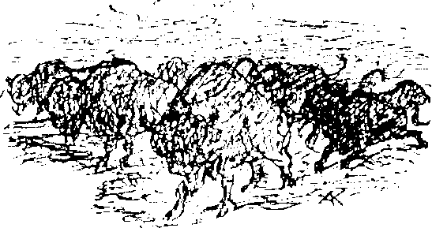
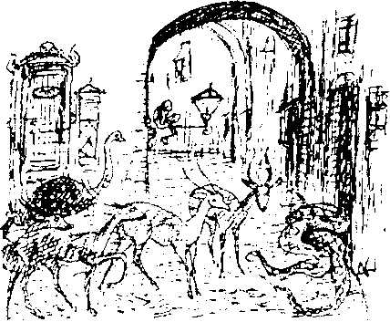
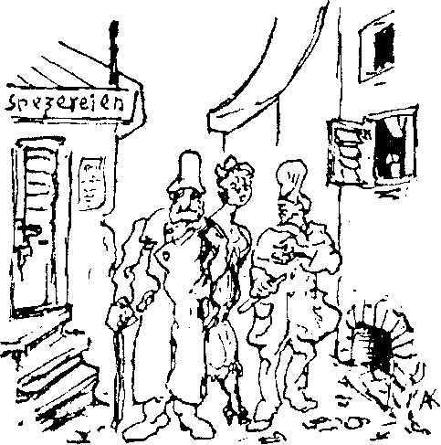
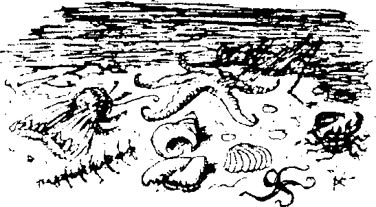

1
Monoton bir sabah. Hercules Bell, yan oturur vaziyette, kollarını kavuşturmuş, derin düşüncelere dalmış hala yatağındadır. “Galip geleceğim,” diye mırıldanıyor, yüz hatları - ki yakışıklı demek için fazlasıyla güçlüler - kibirle parlıyor. “Galip geleceğim!” diye yüksek sesle tekrarlıyor ve kalkıyor.
“Zindeyim,” diye düşünüyor, coşkuyla. Boy aynasının önünde çıplak vaziyette dikiliyor. Gözlerinde meydan okuyan bir ifadeyle vücudunu inceliyor, kaslarını göstermek için birkaç beden egzersizi yapıyor. “Demir gibi sert.” Kıllı göğsünü dövüyor. Kendisini bir güreşçi gibi görüyor ve neşeyle kabararak haykırıyor, “Şampiyon: Hercules Bell!”
Rüya Ülkesi halkını düşünüyor ve otomatik bir hareketle odanın köşesine tükürüyor. Bu aciz koyun sürüsünü bir an önce hizaya getirecek!
Aniden kaşlarını çatıyor. Dış Yerleşim aklına geliyor. Oraya bir kez, yaşayanları görmek için gitmişti. “Martaval” eski kabile hakkındaki fikirlerini özetleyen bir sözcük olmuştu ve “fikirlerine katılmayan” bu köye bir daha hiç gitmemişti.
Mavi gözlü Asyalıların soğuk tarafsızlığının farkına vardığı anda, Yerleşim’in parti politikaları için pek verimli bir toprak olmadığını anlamıştı. Ayrıca bu tuhaf yaşlı insanlar içine huzursuzluk veriyordu ve onların bir şekilde kendisine karşı hareket etmelerinden korkuyordu. Başlamakta olan değişimden hiç etkilenmemişlerdi. Hala eylemsizce, günden güne yaşıyorlardı. Cehenneme kadar yollan var! En yozlaşmış Rüya Ülkeliler bile onlardan iyidir!
Giyiniyor ve titizce tıraş oluyor, ustalıkla yüzüne masaj yapıyor ve sonra yeniden neşeleniyor. Son darbesi, zaferi getirecek olan hamlesi henüz yapılmadı, kimse böyle bir şeyden şüphe bile duymuyordu. En sevdiği uşağından ayrıldığı geceyi düşünüyor. Yirmi yıl boyunca Bell’in özel hizmetkârlığını yapmış ve ona sadık kalmış olan bu adam, başka ülkelere buradan bahsetmek uğruna Rüya Ülkesi’ni terk edip hayatını tehlikeye atmıştı. Connor sınır duvarlarının dışındaydı. Pratik ve teknik konulardaki dehası sayesinde tek kaçış ihtimalinin nehirden olabileceğini çabucak fark etmişti. Nehrin duvarın altında kaybolduğu noktada suya dalmış ve metal bir ızgara keşfetmişti. Karanlık su örtüsünün altında parmaklıklardan birini eğmiş, zayıf ve çevik bedeninin içinden geçebileceği büyüklükte bir gedik açmayı başarmıştı. Bunu yaptığı gece duvarın ötesinden atılan bir fişek Amerikalı’ya hizmetkârının cesur planının yolunda gittiğini haber vermişti. Önemli mektubu, göğsüne bağladığı kauçuk çantada taşıyordu. Onun gibi çelik bünyeli bir adam için buz gibi sulara gece yapılan bir dalışın önemi yoktu. Artık hiçbir şey ters gidemezdi! Connor dayanıklılığını ve zekâsını türlü kahramanlıklarla göstermişti.
Yardım en geç dört ya da altı hafta içinde gelecekti.
“İki ay sonra Rüya Ülkesi’nin hükümdarı ben olacağım,” diyordu Bell, puro kutusunu doldururken. “Yakında Patera’ya diz çöktüreceğim.” Gözlerinde şeytani bir parlaklık vardı. Böylesine nefret ettiği Efendimiz’e niçin karşı içten içe ateşli bir hayranlık duyuyordu? Amerikalı’nın trajedisi işte bu soruda gizli.
Birçok kez yinelenen taleplerden sonra ülkeye kabul edilmiş ve Patera’nın sınırsız güçlerinin etkisini kendi gözleriyle görmüştü. Amerikalının bakış açısına göre, Patera, güçlerini önemsiz ve saçmasapan işlere harcıyordu. Ona kalsa, girişimci dehası sayesinde oldukça farklı bir şey yaratabilirdi! Aklına gelen ilk fikir “Efendimiz” ile bir ortaklık kurmak olmuştu. Bu milyonlarını seve seve akıtabileceği bir amaçtı, tüm dünyayı ele geçirebilirlerdi! Ya da, en azından bu deliler çöplüğünden fazlasını ele geçirebilirlerdi!
O güçlü bir adamdı. Öyle zengindi ki, Amerika ve Avrupa’da insanlar seve seve ayaklarının altını yalardı. Burada ise Efendimiz ona sıradan bir kulu gibi davranıyordu! Patera’yı ziyaret etme girişimleri hep hakaret dolu reddetmelerle sonuçlanmıştı. Bir kez bile tepedeki adama çıkıp değerli tekliflerini sunamamıştı. Her seferinde beklenmedik bir engel ortaya çıkıyordu. Patera’ya karşı duyduğu bu müthiş nefret şaşırtıcı mıydı? Ona gününü gösterecekti! O, Patera’nın masasındaki kırıntıları toplayan bir zavallı değildi ve hak ettiği saygıyı görecekti!
Böylelikle politikaya atıldı, ne derece başarılı olduğunu da görmekteyiz. Uzun geceler boyunca döner durur, görünmez hasmından intikam alma yolları bulmak için kafa patlatırdı. Rüya Ülkesi’nde isminin korkuyla anılmasını sağlayan şey, parası ve durmak bilmez faaliyetiydi. Patera’nın burnunu sürteceği vaktin yaklaştığını hissediyordu.
“Ama şimdi düşünme değil, icraat zamanı!” Saatine bakıyor. Durmuş! “İlginç. Ne kadardır uyuyorum?” Uşağını çağıran zili çalıyor. Kimse gelmiyor. Bekleme odasının kapısını açıyor. İşte John orada, ağzını ayırmış horul horul uyuyor. Bell, uyuyan uşağının yanına gidiyor ve onu sarsıyor. Hiçbir şey olmuyor. En sonunda John yavaşça gözlerini açıyor ve efendisine boş boş bakıyor. Sonra yeniden uykusuna dönüyor ve bir daha da uyandırılamıyor.
Amerikalı restorana inmeden önce hiddetle - fakat hiçbir sonuç alamadan - tüm zilleri çalıyor. Aşağıda gözüne ilk çarpan şey barın arkasında horlayan otel sahibi' oluyor. Kimi müşteriler başları masalara düşmüş biçimde uyumakta. Peçeteleri yastık yapmışlar. Derin uykudalar. Yarı boş bardaklar ve içlerinde yemek artıkları kalmış tabaklar etraflarında. Garson portmantoya yaslanmış, Rüya Aynası dizlerinin arasında, uyuyor. Bell garsonu dürtüyor ve adam yüzündeki huzurlu ifadede en ufak bir değişim olmaksızın yere iniyor.
Amerikalı gerisingeri yukarı çıkıyor, bu sırada neredeyse çamaşırlara sarınmış halde yerde uzanmış olan çamaşırcı kadına takılıyor. Dehşetli bir düşünceyle şaşkına dönmüş halde pencereden dışarı bakıyor. Karşı sokağın köşesinde, kırmızı bir şey rüzgârda uçuşuyor - kâğıt parçaları - başarısız bir bildiri. Binaların arasındaki pis aralıktan yerde yatan iki adam görüyor; bir kadının eteği ve bacakları bir kapı eşiğinden dışarı uzanıyor. Bunlar haricinde etraf terk edilmiş. İleride gezinen sivri burunlu iki hayvan; tilkiler haricinde hiçbir yaratık yok. Beil pencereden çekiliyor. Bembeyaz kesiliyor ve yüzünde tarif edilemez bir hor görme ifadesi beliriyor. Başı düşüyor, alnında derin kırışıklar oluşuyor, burun delikleri titreşiyor ve vücudu uyuşuk bir biçimde çökerken, “Beceriksiz! Şansını kaybettin!” diye bağırıyor. Gözleri kapanmaya başlıyor,' fakat bundan ileri gitmiyor. Bedeni ürperiyor ve yorgunluğa karşı koyuyor. Bell kendini lavaboya sürüklüyor, kafasını soğuk suya daldırıyor - ne kadar ferahlatıcı! - cep matarasındaki konyağı kafaya dikiyor, şişede kalanla da şakaklarını ovuyor ve bitkinlik anı sona eriyor. Piposunu dolduruyor, şapkasını takıyor ve dışarı çıkıyor.
Hercules Bell teslim olmaz.
II
Karşı konulmaz bir uyuma hastalığı Pearl’ü etkisi altına almıştı. İlk olarak Arşiv’de ortaya çıkmış, oradan Ülke’nin tümüne yayılmıştı. Bir salgındı ve kimse ona karşı koyamıyordu. İnsan bir an ne kadar zinde ve uyanık olduğuyla övünürken bir an sonra mikroba yenik düşüyordu.
Hastalığın bulaşıcı özelliği hemen fark edilmişti, ancak doktorlar bir tedavi bulmakta çaresizdi. Amerikalı’nın bildirileri etkisizdi, çünkü insanlar onları okumaya başladıkları anda esnemeye başlıyordu. İmkânı olanlar, hastalığın etkisiyle sokağın ortasında serilip kalmamak için evden çıkmıyorlardı. Yalnızca kuytu, sıcak bir köşeye çekiliyor ve olayların gelişimini memnuniyetle kabulleniyorlardı. Ne de olsa canları yanmıyordu. Hastalardaki ilk belirti genellikle derin bir uyuşukluk hissiydi. Bunun ardından bir esneme nöbeti geçiriyor, gözleri kumla doluyormuş gibi hissediyordu. Gözkapakları ağırlaşıyor, düşünceleri birbirine karışıyor ve sonunda olduğu yere yığılıyordu. Hastalıktan mustarip olanlar bazen keskin kokulu tuzlarla - örneğin, amonyak tuzu - ayıltılabiliyor, ancak birkaç sözcük geveledikten sonra yeniden uykuya dalıyorlardı. Bünyesi güçlü kişilerde havluyla sert bir biçimde ovulmak uykunun gelmesini birkaç saat geciktirebiliyor, fakat sonuç yine aynı oluyordu. Birçok vakada hastalığın başlangıcı son derece hızlıydı. Bir konuşmacı, politik durumu irdeleyen tiradının ortasında masaya yaslanıyor, başını eğiyor ve ritmik olarak horlamaya başlıyordu.
Diğer yandan, kafedeki Anton gözlerini zorlukla açık tutmasına rağmen çalışmaya devam ediyordu. Ama, tanrım, onu ayakta tutmak için neler yapmamız gerekiyordu, bir bilseniz! Onu şeker topakları ve çay kaşıklarıyla adeta bombalıyorduk. Aşırı unutkandı ve sonunda siparişi getirdiğinde de sabırsız müşterinin kendisi uykuya dalmış oluyordu. Baygın düşmüş müdavimlerin purolarının iyice söndürülmüş olması için gözümüzü dört açıyorduk.
Tören meydanında askerler tehditkâr ihtilale karşı hazırlıklı olmak için antrenman yapıyordu. Fakat çavuşların bağırışları hiçbir işe yaramıyor, askerler birbiri ardına yere yığılıyordu.
Tuhaf ve eğlenceli kazalar oluyordu. Hırsızlar, parmaklan halen başkasının cüzdanındayken bile vicdanları rahat uyuyorlardı. Melitta, Brendel’in dairesinde dört gün boyunca serilip kalmıştı. Bu esnada kocası da başı masaya düşmüş, burnu mayonezin içine girmiş bir halde rüya görmekteydi.
Castringius, hastalığa kâğıt oynarken tutuldu. Sandalyesinde geriye yaslanıyordu, karo valesi pençelerinin arasındaydı. Ben de aceleyle odama çekildim ve hastalık beni işte orada vurdu. Tam yatak örtülerini açmış, perdeleri çekmekteydim. Son gördüğüm şey, prensesin dairesinden yola doğru uçuşmakta olan banknotlardı; hafif bir güz rüzgârı onları nehre doğru, kuru yapraklar gibi savuruyordu. Yatağa kadar anca gidebildim.
Salgının patlak verdiği ilk iki gün trenler, büyük gecikmelerle de olsa gelmeye devam etmekteydi, çünkü her istasyonda yeni görevlilerin alınması gerekiyordu. Bir süre sonra tren seferleri de sona erdi. Ses’in son sayısında sayfaların sadece tek yüzü basılmıştı; buna rağmen tamamlanmamış cümleler ve onlarca yazım hatasıyla doluydu. Normalde gereksiz birkaç şeyle doldurulan son sayfadan ise eser yoktu.
Hastalıkla boğuşmanın manası yoktu. Pearl uyuyordu. Bu mutlak bilinçsizlik hali herhalde altı gün kadar sürmüş olmalıydı. En azından bu süreyi müşterilerinin sakal uzunluklarına göre hesaplayan berber böyle söylüyordu.
Söylentilere göre bu süre boyunca bütün şehirde uyumayan, ya da azıcık uyuyan yalnızca bir kişi vardı: Amerikalı. Uyumadığı günlerden birinde Uyuyan Güzel’deki prens gibi Uzun Cadde’de yürürken, kafenin penceresinden içeri baktığında satranç oyuncularından birinin bir hamle yaptığını gördüğünü söylemişti. Bundan yola çıkarak onların da hastalıktan etkilenmedikleri sonucuna varmıştı. Bunun dışında her yanda yere düşmüş bedenlerle karşılaşıyordunuz. Yalnızca parklardaki banklar değil, merdivenler ve kapı önleri de düzgün giyimli bey ve hanımlarla kaplıydı; tuhaf durumlarına rağmen yüzleri gülümseyen evsiz insanlar gibi sereserpe uzanmışlardı.
İnsanlar kendilerine geldikçe çoğu kişi olağan işlerini yapmaya devam etti. Bu sadece Brendel için değil, kasabın bahçesinde günler boyunca bağlı halde vicdanlı birinin elinden ölümünü bekleyen ihtiyar beygir için de kutsanmış bir rahatlama oldu. Tabii en sonunda yine ölümüne kavuştu. İşin ilginç tarafı, hayvanlar uyuma hastalığından etkilenmiyorlardı.
Birçok kişi için hiçbir şey, en azından hemen, değişmemişti. Uyandığımda beslenme ihtiyacı hissederek kafeye gittim. Berber de oradaydı. Kurtlar gibi açtı ama çok da keyifsizdi. Bir miktar para kaybolmuştu ve bu olay berber ile tüm hayvanlar gibi uyanık kalan yardımcısının arasının açılmasına neden oldu.
Rüya Şehri uyandı ve kendini bir hayvan cennetinde buldu. Uzun uykumuz sırasında başka bir dünya - hayvanlar krallığı - öylesine geniş bir alana yayılmıştı ki bizler de yok olup gitme tehlikesiyle karşı karşıyaydık. Belirtmem gerekir ki, uykudan evvelki zamanlarda bile sıçan ve fareler çok iyi bir yıl geçirmişti. Ayrıca yırtıcı kuşlar ve dört ayaklı tavuk hırsızlarının yaptıkları yağmalar hakkında da şikayetler olmuştu. Bahçıvan, Alfred Blumenstich’in bahçesinde kurt izlerine bile rastlamıştı. Bunu söylediğinde herkes ona gülmüştü, fakat sonraki gün Frau Blumenstich’in evcil hayvanı olan kar beyazı bir Ankara keçisinden geriye kalan tek şeyin bir çift boynuz olduğu görüldüğünde kimse gülmemişti.
Tek başına, rahatsız edilmeden uykuya dalıp davetsiz misafirler eşliğinde uyananların şaşkınlığı nasıl tarif edilebilir ki? Pencereye büyük, yeşil bir papağan tünemiş ya da gelincikler ve sincaplar yatağın altından etrafı gözetliyor olabilirdi. Olan biteni yavaş yavaş anlamaya başlıyorduk.
Kasaplar, uyandıklarında büyük bir çakal sürüsünü mezbahadan kovmak zorunda kaldılar. Kurt, vahşi kedi ve vaşak saldırıları korkutucu derecede arttı ve evcil hayvanlarımız bile bizlere karşı gelip huysuzluk yapmaya başladı. Neredeyse tüm kedi ve köpekler sahiplerini bırakıp avlanarak beslenmeye başladılar. Yeniden ortaya çıkmış olan gazeteler korkunç bir haber veriyordu: Apollonia Altı’nın zemin katındaki dairelerden birine, bir domuz kasabının penceresine, bir ayı tırmanmış ve derin uykuda olan zavallı kadını bütünüyle mideye indirmişti.

Avcı ve balıkçılar, gördüklerini iddia ettikleri devasa, hantal hayvanlar hakkında tuhaf hikâyelerle şehre geliyorlardı. Ama zaten profesyonel abartıcılar olarak görüldükleri için kimse onlara inanmıyordu. Sonra aniden kırsal kesimde yaşayan Rüya Ülkeliler sürüler halinde şehre gelmeye başladı. Cüsseli atlan üzerinde, kadınları, çocukları ve değerli eşyalarını tıkabasa yükledikleri at arabalarıyla gümbürdeyerek geliyorlardı. Çok mutsuzlardı ve Saray ile Arşiv’in önünde bir gösteri yaptılar. Kendilerini korumaya hiçbir askerin gönderilmemiş olmasını protesto ediyorlardı. Söylediklerine göre bufalo sürüleri çiftliklerini yerlebir etmişti ve yüzlerce dev maymunun saldırısından kıl payı kaçabilmişlerdi. Bu yaratıklar birer canavardı ve kadın çocuk ayırt etmeksizin herkesi öldürüyorlardı. Bir süre sonra iki ayaklan üzerinde yürüyen devasa hayvanların ayak izleri Tomassevic Arazisi’nin killi toprağında tespit edildi. İşte bu kaygılanmak için iyi bir sebepti.
Böceklerin saldırısı dehşet vericiydi. Obur çekirgeler, bulutlar halinde tepelerden aşağı indi ve geçtikleri yerde tek bir ot bile bırakmadılar. Bir kısmı kalenin bahçesini bir gece içinde yok etti. Böcekler, kulağakaçanlar ve bitler yaşamlarımızı kâbusa çevirdiler. Tüm bu hayvan türleri, en büyüğünden en küçüğüne kadar karşı koyulamaz bir döllenme dürtüsü tarafından ele geçirilmiş gibiydi. Dört ve altı ayaklılar birbirlerini yiyor olmalarına rağmen esrarengiz bir biçimde çoğalıyordu. Resmi olarak dağıtılan silah ve zehirlerin, kapı ve pencerelerin kapalı tutulması yönünde yapılan şiddetli duyuruların pek bir etkisi olmuyordu. Böceklerin doğurganlığı inanılmaz boyutlardaydı. Asker ve polislere destek vermek için gönüllü avcı birlikleri oluşturuldu. Birçok binanın duvarlarına, dışarıya ateş edebilmek için delikler açıldı.
Kafenin sahibinin karısı bir sabah uyandığında yatağında on dört tavşan buldu. Odası benimkinden yalnızca incecik bir duvarla ayrıldığı için yavru tavşanların cırlamalarını duyabiliyordum.
Ancak en dehşetlisi yılanlardı. Hiçbir ev güvende değildi. Aşağılık yaratıklar her yere giriyordu; çekmecelere, gardroplara, pardesü ceplerine, su testilerine, her yere. Ve bu sinsi sürüngenler korkunç bir doğurganlık gösteriyordu. Karanlıkta odanıza girdiğinizde yerdeki yılan yumurtalarına basabilir, onları bir hışırtıyla patlatabilirdiniz. Castringius “yumurta dansı” dediği ve mükemmel biçimde uyguladığı bir dans icat etmişti.

Fransız Mahallesi’ndeki insanlar haşerata artık zorlukla tahammül ediyordu. Yine de, yaratık istilası sırasında çoğu aklını başında tutmayı başardı. Pencereden bir geyik vurup etini komşularla paylaşmak olağan bir eylem olmuştu. Yaşadığım evin çatısındaki pencereden tarla ve çayırlar görülebiliyordu. Bu alanlar artık korkunç bir hayvanat bahçesine dönüşmüştü. Nehir bile olanlardan nasibini almıştı; yıllar boyu süren gayretlerin sonucunda uzaklara sürülmüş olan timsahlar yeniden ortaya çıkmıştı. Kabinleri mesken tutmuş ölümcül yayın balıkları yüzünden kaplıcaların kapatılması gerekmişti.
Bu zor günlerde meydana gelen az sayıdaki iyi şeyden biri de lezzetli bir rosto ya da az bulunur başka etlerle sıklıkla karşılaşabilmekti.
Bu süre boyunca Profesör Korntheuer büyük saygı kazandı. Rüya Ülkelilere zararlı böcekleri zararsız olanlardan ayırma konusunda ücretsiz dersler veriyordu. Günün ilk ışıklarıyla uyanır, üç namlulu tüfeğiyle ceylan sürülerinin arasında gezinir, etleri için yaban domuzları ve dağ sıçanlarını avlardı. Fakat hayvanlar bu tuhaf gözlükler takan avcıya alıştılar ve yaşlı adamı sevmeye başladılar. Bizim pencerelerimiz ise onun silahından o kadar çok hasar görmüştü ki sonunda silahı elinden alındı.
Geceleri yalnızca yanımızda bir fener ve silah varsa dışarı çıkabiliyorduk. O zaman bile çok temkinli olmak gerekiyordu. Kapan ve tuzaklar şehri daha da tehlikeli hale getirmişti. Ama böylesine bir olayın Rüya Ülkeliler’i eğlenmekten alıkoyması düşünülemezdi.
III
Toplum ahlakının batmış olduğu bu derinlik, sanatçı dostum Castringius için büyük bir fırsat yaratmıştı. Pornografikası büyük ilgi topluyordu, moda oydu. Embriyonu Dölleyen Şehvetli Orkide gibi çizimleri hayranlık uyandırıyordu. Hector von Brendel, sırf Melitta “eğlenceli” bulduğu için bir seri resim almıştı. Melitta başlarda onlardan çok etkilenmişti ve hepsini güzelce çerçeveletip yatak odasına asmıştı. Ama sonradan tüm bunların bir kapris olduğu anlaşıldı ve birkaç gün sonra resimlerin gitmesi gerekti. Melitta ’nın o sıradaki sevgililerinden biri olan bir süvari subayının resimleri almasına izin verilmişti; karşılığında da Melitta’ya zümrüt taşlı bir çift antika küpe hediye edildi. Subay, çizimleri aynı akşam bir eşya piyangosu yapılan kafeye götürdü. Hasılat, onların ahlaksızlıkları yüzünden madur olan mustarip kişilere yardım olarak verilecekti; o zamana dek hastanemizde onlar için bir koğuş bulunmuyordu. Oldukça büyük bir miktar para toplanmıştı, Blumenstich -eskici değil- hesap açığını tamamladı ve kısa bir süre sonra çocuk hastanesinin yanındaki manastıra ilk hastalar kabul edilmeye başlandı.
Tesadüfe bakın ki çizimleri kazanan bendim ve artık benim odamda asılıydılar. Bir gün sokakta Castringius’a rastladım. Bana yeni bir daire aradığını söyledi. Stüdyosunun ön ve çatı penceresi kırılmıştı ve perde rayında, ipe dizilmiş sucuklar gibi yarasalar sarkıyordu. Tüm bunları anlatırken bir yandan da kendisini inatla itelemeye çalışan bir dağ keçisini savuşturuyordu. Onu daireme davet ettim ve yukarıda resimleri gördü. Şaşkınlıktan ağzı açık kaldı.
“Bu resimleri nasıl ele geçirdiniz?”
Açıkladım.
“Çok iyiler. Beyaz Çizgili Kırbaç en olgun eserim. Geleceğe ait bir ahlak anlayışı sentezini temsil ediyor. Günümüzde, ima ettiği şeyleri anlayabilecek bir kadın yok. Gerçekten acı bir duygulanma etkisi yaratıyor.”
Ona tamamıyla katılıyordum. Riıya Ülkesi’nde, sanatsal başarıyı takdir etme kapasitesine sahip olan tek kişi oydu. Tuhaf bir tipti, ama onu seviyordum. Hem neden sevmeyecektim ki? Aranızda günahsız olan, ilk taşı atsın. Birden sokakta bir gürültü koptu. Pencereye koştuk. Çok sayıda insan toplanmış, gülüşmekteydi. Ve gerçekten gülünecek bir şey de vardı. Gözünüzde bir canlandırın: Maymun, aletlerini bırakmış ve greve gitmişti! Önceki gün sokaktan geçen bir makak sürüsüne gözü takılan Giovanni, bir müşterinin tıraşını yarıda bırakmıştı. Uzun kuyruklu, güzel bir makak ona el sallamış ve bu çağrı berberimizin yardımcısına dayanılmaz gelmişti. O sırada felsefi efendisi onu bir değnek ve zamanın ufacık evrenciklere bölünebileceği fikriyle zaptetmeyi başarmıştı. Şimdiyse hiçbir mantıklı sebep onu tutamazdı. Su borusundan yukarı zarif bir biçimde tırmandı, becerikli kuyruğuyla prensesin kahve matarasını kavradı, artık yıkıntı halinde duran boşaltılmış eski dairemin pencere pervazına kuruldu ve kesesinden çıkardığı Yahudi harpını çalmaya başladı. Yaşlı prenses dehşet dolu bir çığlık attı ve kahve hırsızına bir süpürgeyle vurmaya çalıştı, ancak Giovanni kahveyi hemen kenara fırlatıp süpürgeyi yakaladı. Prensesin nasıl bir hızla ortadan kayboldup ikinci katta belirdiğini görmeliydiniz. Düello, penceremden mükemmel bir biçimde izlenebiliyordu. Giovanni Battista çok eğleniyordu. Önce prensesin asıl silahı olan eski bir ateş maşasını ele geçirdi ve prensesin süpürgeyi almasına izin verdi; tüm bunlar olurken adeta uçan bir maymun oluvermişti! Dairemde birkaç şişe kara mürekkep bırakmıştım ve Giovanni bunları Prenses’e atıyordu. Keskin bir nişancı olduğunu da belirtmek gerek; prenses balıkçı kadınlar gibi küfrederken hepimiz maymuna alkış tutuyorduk.
Maymun birden yine ortaya çıktı, kafasında yaşlı kadının kirli başlığı vardı. Pencereden atladı ve su borusundan aşağı kaydı. Yüzünü çirkin ve tuhaf bir şekilde buruşturmuştu. Prenses pencereden bağırarak polisleri çağırıyor, aşağıdaki berber ise elinde değneğiyle Giovanni’yi bekliyordu. Maymuna “Kendinden utanmalısın,” diye bağırıyordu.
Alfred Blumenstich, yüzünde hoşnut bir gülümsemeyle, hayırseverliğinin alamet-i farikasını bir kez daha dağıtmış olarak dokuz küçük sevdiceğinin dairesinden çıkmaktaydı. Arabası onu bekliyordu. Maymun koca bir sıçrayışla aygırın kafasına bindi ve hayvan öne fırladı. Seyirciler çılgına dönüp araba ile tuhaf sürücüsü gözden kaybolana dek alkış tuttu.
Bu olaylardan yalnızca birisiydi, gündemde buna benzer birçok olay mevcuttu.
Tüm bu hayvan kalabalığının nereden geldiği bilinmiyordu. Şehrin gerçek efendileri artık onlardı ve bunun farkında oldukları da kesindi. Yatağıma yattığımda, sanki büyük bir metropoldeymişim gibi dışarıdan gelen at toynaklarının takırtısını duyardım. Develer ve vahşi katırlar sokaklarda cirit atardı; onları kızdırmak tehlikeliydi.
Hayvan sayısındaki bu artışa karşın bitkiler yok olmaya yüz tutmuştu. Her şey kemirilip ezilmişti ve yeni bitkiler yetişmiyordu. Surlardan mezarlığa dek uzanan ıhlamur ağaçlan artık çıplak kütüklerden farksızdı. Topraktan, sanki daha fazla yaratıklar kusulacakmışcasına buharlar çıkıyordu. Küçük deliklerden dışarı sıcak, pis kokulu dumanlar tütüyordu. Gece olunca etraf, şekillerin dış hatlarını bulanıklaştıran tuhaf bir ışıkla aydınlanıyordu.
IV
En tuhafı ise hayvanların sayısında meydana gelen korkutucu artışla başlayan ve karşı konulmaz biçimde Rüya Ülkesi’nin mutlak çöküşüne kadar devam eden esrarengiz süreçti: Parçalanış. Her şeyi etkiliyordu. Farklı maddelerden yapılmış olan binalar, yıllarca toplanmış eşyalar; Efendimiz’ in para yatırdığı her şey lanetlenmişti. Duvarlarda çatlaklar oluştu, tahtalar çürüdü, demirler paslandı, camlar buzlandı, kumaşlar lime lime oldu. Nadide objet d ’ari’lar görünüşte hiçbir sebep olmamasına rağmen önüne geçilmez bir iç çürümeye yenik düştü.
Cansız maddeler için bir hastalık söz konusuydu. En bakımlı evlerde bile çürüme ve küflenmeler vardı. Havada bilinmeyen bozucu bir etki olmalıydı, çünkü taze gıdalar - süt, et ve hatta yumurtalar - birkaç saat içinde bozuluyordu. Çok sayıda ev büyük çatlaklarla kaplanmıştı ve derhal boşaltılmaları gerekiyordu.
Ve sonra karıncalar ortaya çıktı! Her çatlakta ve kıvrımda belirdiler; giysilerimizde, çantalarımızda, yataklarımızdaydılar. Üç çeşittiler: siyah, beyaz ve kan kırmızı. En büyükleri olan siyah tür, duvarlardaki her çatlakta ve dışarıda bırakılan her yiyecek üzerinde görülebilirdi. Çok daha tehlikeli olan beyazlar, tahtayı toza çevirirdi. Fakat aralarında en korkunç olanı, şüphesiz, kan kırmızılardı, çünkü insan vücudunu mesken tutuyorlardı. İlk başlarda kaşınmak halen kaba ve insanın yalnızken yapması gereken bir şey olarak görülüyordu. Ama kaşınma bir kez başladı mı elden ne gelir ki? Fransız Mahallesi’ndeki herkes çağlardır kaşınırdı. Bizler de kısa bir süre sonra gülüp onları örnek aldık. Buna cesurca önderlik eden kişi, resmi bir davette kaşınmaya başlayan Ekselansları Devlet Başkanımız’ın eşi oldu.
Sokaklardaki hayvan pisliklerinden ya da evlerdeki tozlardan kurtulmak imkânsız hale gelmişti. Ne kadar uğraşırsak uğraşalım, artmaya devam ettiler. Giysilerimiz, onları fırçalar ya da silkelerken yok oldu. Şaşırtıcı bulduğum tek şey ise Rüya Ülkelilerin nasıl olup morallerini bozmadıklarıydı.
Örneğin, Melitta Lampenbogen zaptedilemez bir haldeydi. Subay müfrezesinin tümü, en alt rütbeli teğmenine kadar onun evinde yatıp kalkar olmuştu. Erkekler onunla konuşurken hala kekeliyorlardı, “Benim için bir şerefti han’fendi,” fakat Melitta artık nazik bir konuşma havasında değildi. Haliyle toplumun daha aşağı bir tabakasına hitap etmeye başladı. Sokakta eteğini kaldırma numarasını sıklıkla görüyordum. İnsanlar ona bakmak için duruyorlardı. Köpekler peşinden koşuyordu, ama artık önemli değildiler. Bir seferinde birisinin Melitta’nın elbisesini parçaladığını gördüm. Kız dehşet içinde kaçarken yere buruşturulmuş bir mektup düşürdü. Mektubu aldım ve daha sonra okudum.
Sevgili Kraliçe Karıncam,
Halen mutlulukla zehirlenmiş haldeyim. Düşüncelerimde tüm ca1:ibeli bölgelerini öpüyorum. Her zamanki gibi rüyalarımın kadınısın. Nasıl uyudun? Herhalde, her zamanki gibi az uyumuşsundur. Ben sonunda rahatlıkla uyuyabilmek için bir yol buldum. Gardrobu bu yere yatır, sonra üzerinde bir parmak kalınlığında böcek zehiri serp, sonra bir battaniye, sonra biraz daha zehir, sonra bir battaniye daha. (Bu aralar pek moda olan altları düğmeli pijamalar hiçbir işe yaramıyor.) Gardrobun kapısını içine girer girmez kapa; sinek teliyle kaplı, küçük (kalp şeklinde?!) bir delikten nefes alabilirsin.
Lütfen mektuplarını artık otele yollama. Amerikalı’nın çetesinden nefret ediyorum, bilhassa şu Jacques denen herif tam bir hırsız. Dahası, yemekler de son zamanlarda iyice kötüleşti; bundan böyle yemeklerimi Uzun Cadde’deki kafede yiyeceğim. Mektuplarını “H. v. B.” diye işaretleyerek oraya yolla, ama onları sakın bana getirmesi için N.C.’ye verme. Ona artık güvenmiyorum ve o kahrolası Amerikalı’yla çalışmaya başladığından beri iyice küstahlaştı.
Yağ fıçın son ayrılan kiracısı hakkında ne düşünüyor? Berber artık dükkanı kapatıyor ve prensesten de pek para alabildiği yok. Onu bugün arabasında giderken gördüm, ama o sıkıcı asalaklarına öylesine dalmıştı ki beni fark etmedi bile.
Bu gece saat dokuzda, güllüğün arkasında buluşalım - orası da artık ne kadar çorak!
Seni çok seven Hector.
Not: Hala senin hakkında imzasız mektuplar alıyorum. Dünya sevgili Melitta’m hakkında ne kadar az şey biliyor!
Bir süre sonra herkes yanında bir kese böcek zehiri taşır olmuştu. Önceleri uyku hastalığına tutulmuşlarken şimdi hiç uyuyamaz hale gelmişlerdi. İnsanlar hararetli bir heyecandan dolayı yanakları kıpkırmızı kesilmiş halde gece yarısından sonra şehrin sokaklarını dolaşır oldular. Sokakta olmak, harabe halindeki evlerde durmaktan daha güvenliydi. Son günlerde hayvanların çiftleşme çılgınlığı en üst noktalara varmıştı. Her yerde – karanlık köşelerde, suda, havada - her tür yaratık çiftleşiyordu. Ahırlardan kişnemeler, melemeler, homurtular geliyordu. Kesime götürülen inekleri görüp sinirden deliye dönen bir boğa, bir kasabı duvarda hamur gibi ezmişti.
Amerikalı etrafa nefret ve anlaşmazlık yayıyor, her şeyle alay ediyordu. Hala Efendimiz’e inanan birkaç kişi vardı. Saat büyüsü unutulmuştu. Kırk yılda bir birisi hücreye giriyor, ama önceden olduğu gibi içeride otuz saniye kalmıyor, hemencecik dışarı çıkıyordu. Rüya Ülkesi'nin sonunun amansızca yaklaştığını artık biliyordum.
Bir gece çatıdan tıslama ve derin kükreme sesleri duydum. Dev bir leoparın bir tavşanı çatırtıyla yediğini dehşet içinde gördüm; kemiklerin çatırtısını duyunca sırtımdan buz gibi terler boşandı. Odam artık rahat bir yuva olmaktan çıkmıştı. Duvardaki iki yarıktan akşamları belirli saatlerde hamamböceklerinin arka kısımları çıkar, bir şayak etkisi yaratırlardı. Gün içinde bir ardıçkuşu çifti kültablamı yuva olarak kullanırdı. Ama ne yazık ki bu zevki uzun süre yaşayamadım. Bir gün, bir kerkenez beni umursamadan içeri daldı ve erkek ardıçkuşunu öldürdü.
Bir akşam tam yatağa girmek için böcekleri avlarken battaniyemin altında iki akrep buldum. Tam bu sırada av için kullandığım silah - bir çizme çekeceği - parçalandı. Makasımı aldım: o da paslanmıştı. İşte o zaman kâğıtlarımın küflendiğini, cetvellerimin, çizim masamdan arta kalanların, üç ayaklı çekmece sandığımın, kısaca tüm mobilyalarımın kurtlar tarafından kemirilip çürütüldüğünü fark ettim.

Peki ya ben nasıl görünüyordum? Oldukça tuhaftım! Zaten normalde temiz pak giysiler içinde olan diğer insanlar da paçavraya dönmüş giysiler giyiyorlardı. Hepimizin kıyafet ve ayakkabıları küf içindeydi. Yıkamak ya da ovalamak işe yaramıyordu, onlardan kurtulduğumuz anda yeniden beliriyorlardı. Kıyafetlerimiz yıprandı, yırtıldı ve parça parça oldu. Biz erkekler bu olayı belli bir ağırbaşlılıkla karşılayabildik, peki ya zavallı kadınlar! Bundan bahsetmesem daha iyi olur.
V
Evler tamamen yaşanamaz bir hal aldığında büyük bir değişiklik meydana geldi. Zemin katlarda sorun yoktu, ama yukarı katlara çıkmak pervasız bir cesaret gerektiriyordu.
Bir gün garson bana çürük bir yumurta, bulanık bir sıvı içeren kırık bir bira şişesi ve herhalde peçete olarak düşünülmüş leş gibi bir kumaş parçası getirdiğinde sabrım taştı ve o sırada lokantanın arka tarafında bilardo masası parçalarıyla tavanı onarmaya çalışan patronu çağırdım.
“Bunlar da nedir?” diye havladım. “Bu çatal bıçağın üzerinde en az bir kilo küf var. Lütfen tüm bu iğrenç şeyleri ve berbat kokulu paçavrayı derhal kaldırın.” Adam eğildi ve kapkacağın üzerindeki küfü kazımaya çalıştı. “Son günlerde çalışanlar da tuhaflaştı,” diye sızlandı.
“Pekala, pekala.” Hiddetle elimi sallayarak onu uzaklaştırdım, ayağa kalktım, yıpranmış fötr şapkamı aldım ve kafeden çıktım. Oturmuş olduğum yer bir karınca ordusu tarafından kaplanmıştı bile.
Kafeye yalnızca alışkanlıktan gidiyordum. Oradaki şartlar sade kahve haricinde bir şeyler yiyip içmek için fazlasıyla tiksindiriciydi. Anton değişmişti ve bu değişiklik iyi yönde değildi; ellerini hiç yıkamıyordu ve kokusu en uzak mesafelerden bile alınabiliyordu. İnsan bu halde dolaşmamalıydı. Berber kendisini kaplayan kir tabakasını “Esasi tabaka” diye adlandırıyordu. Tek kelimeyle mide bulandırıcıydı! Bu yüzden, bir akşam kafeye gelip antrede yumuşak bir kıkırdama duyduğumda daha da şaşırdım. Bir hayvan bulmayı bekleyerek her köşeyi lambamla taradım, ama ambar kapısının arkasında ne göreyim? Anton ile Melitta tutkuyla birbirlerine kenetlenmişlerdi.
Melitta bu olaydan kısa bir süre sonra öldü. Yatak odasında, parçalara ayrılmış bir halde bulunmuştu. Kapısı kilitliydi ve kırması gerekmişti. Devasa bir mastif kızın üzerindeydi. Kudunnuş yaratık tüylerini kabartmış, kapıda belirmiş olan adamların üzerine atlamış ve vurulmadan önce iki polisi ısırmıştı. Adamlar sonradan kuduzdan ölmüştü. Hayatta kaldığı son günlerde Melitta’nın eski güzelliğinden eser kalmamıştı. Yaşam tarzından dolayı oluşan yaralarını aşırı makyaj ve pudrayla kapamaya çalışması nafileydi.
İki satranç oyuncusu da büyük acılar çekiyordu. Tutkularının esiri olan bu yaşlı beyefendiler her hareketi öylesine karmaşık buluyorlardı ki parmaklarını kaldırmak için bile saatlerce düşünmeleri gerekiyordu. Etraftaki böcek miktarına bakıldığında, böylesine bir yavaşlığın kimi sorunlara neden olabileceği açıkça görülebiliyordu. Bir gün kafede çay içmekte olan takdir edilesi genç bir hanım, iki satranç oyuncusunun çektiği acıları fark etti. Adamların yanına gitti ve utanıp sıkılmadan kıyafetlerinin üzerindeki karınca ve böcekleri toplamaya başladı. O günden sonra biz de genç hanımın yaptığı gibi yapmaya başladık. O zamana dek hepimiz satranç oyuncularının çarpık yüz ifadelerine gülüp geçerdik, oysa artık arada bir gidip sırtlarını kaşımak biz kafe müdavimlerinin olağan bir uğraşı haline gelmişti. Gördüğünüz gibi o korkunç günlerde bile zor durumdakilere gösterilen şefkat duygusu yok olmamıştı.
Amerikalı yeniden etrafı karıştırmaya başlamıştı. Hayvan akınının çok yakında sona ereceği kehanetinde bulundu. Büyük hayvanlar yavaş yavaş yok olmaya başlayınca bir nebze haklı olduğu da anlaşıldı. Yine de, küçük hayvanlar ve sürüngenler halen mevcuttu. Kuşlar ise, kuzgun ve beyaz boyunlu akbaba sürüleri hariç, tamamen yok olmuştu. İri ve ağır akbabalar caddelerdeki ağaçların üzerine bronz heykeller gibi tüneyip gözlerini sanki bir şeyi bekler gibi şehrin üzerine dikiyorlardı. Kehaneti yalnızca kısmen doğru çıkmış olmasına rağmen, Amerikalı kendine yeni yandaşlar edindi. Artık azılı düşmanı Patera’ya karşı saldırılan eskisinden de şiddetliydi, tabii saldırabilirse.
Nehir kenarında yaptığım günlük yürüyüşlere tekrar başladım. Dalgalar sayesinde kıyıya sayısız istiridye kabuğu, mercan, salyangoz, balık kılçığı ve pulları vurmuştu. Bu kadar çok su canlısı kalıntısına rastladığım için şaşkındım. Nehrin kıyıları sanki mistik işaretlerle kaplanmış gibi duruyordu ve ben mavi gözlü kabilenin bu sembolik dili anlayabildiğinden emindim. Burada kesinlikle gizemli bir şeyler vardı. Muhteşem böceklerin - pervanelerin ve uçan haşeratın - kanatlarında unutulmuş harfler olduklarına inandığım işaretler vardı, ancak onlara açılan anahtara sahip değildim.

Ne kadar muhteşemsin Patera, diye düşündüm. Efendimiz neden kendini onu sevenlerden bile saklıyor? Kasvetli düşüncelere dalmış bir halde yürümeye devam ettim. Karşı kıyıdaki yapraksız ağaçlar nehrin üzerine öyle eğilmişlerdi ki dallan siyah suya değiyordu. Aralarında devasa gölgeler dolaşıyor, kırılan küçük dalların sesleri net bir şekilde duyuluyordu. Bazen aklıma tarihöncesi yaratıkları getiren uzun dallar ya da ağaç gövdeleri geliyordu. Hava karardıkça, yalnız başına yürümek de insanlar için daha tehlikeli bir hal alıyordu. Benim için büyük önem taşıyan bir akşam, arkamı döndüğümde sudan aniden çıkan bir şeyin hava üflediğini duydum. Bir timsah bana dişlerini gösteriyordu.
Eve dönerken önceki gün meydana gelmiş, ancak sonu iyi biten bir başka olayı düşünüyordum. Saray’da yaşayan iri bir hamile kaplan hakkında uzun süredir dedikodular vardı. Birçok kişi Saray’ın pencereli koridorlarından hayvanın küt burnu ve uzun sırtını gördüğünü iddia ediyordu. Dün, aynen buna benzeyen bir hayvan Alfred Blumenstich’in camlı verandasına girmişti. Evin etine dolgun sahibesi, hayvanı görür görmez, hiç ses çıkarmadan oracıkta bayılmıştı. Profesör Komtheuer de bu esnada onlarla yemek yemekteydi. Saygıdeğer yaşlı beyefendi bu korkunç durumda büyük bir kahramanlık örneği sergilemişti. Ayağa kalkarken evin dehşete düşmüş olan beyine “Sakin olun,” demişti, “en vahşi hayvanlar bile daha üstün varlıklara boyun eğer. Dimdik Üzerlerine yürüyüp bakışlarımızı amiyane bir biçimde onlarınkine dikmemiz içlerini korkuyla doldurur.” Sözü bitince hayvanın üzerine yürüyüp gözlüklerini çıkarmıştı. Kendine yaklaşan sıska bacaklı ilmi şahsın tuhaflığından mıdır yoksa başka bir sebepten mi bilinmez kaplan diğer camı kırarak dışarı sıçramıştı. Ne yazık ki Frau Blumenstich de dişleri arasındaydı. Blumenstich ellerini endişeyle oğuşturmuş, “Ey Tanrım, lütfen Julie’mi kurtar,” diye sızlanmıştı. Tüfeklerle donanmış hizmetkârların peşine düştüğü kaplan, baygın kadını Saray’a taşımıştı. Yolda önlerine çıkan herkes, onlara nazikçe yol vermişti. Derhal itfaiyeciler çağırılmış, onlar da çizgili canavarı avından ayırmaya çabalamıştı. Birinci kattaki büyük odaların birinden, üzerine gelenlere kızgınlıkla hırlayan hayvanın sesi geliyordu. Ateş etmek imkânsızdı, yanlışlıkla Frau Blumenstich de vurulabilirdi, bu yüzden hayvanı yangın hortumlarıyla etkisiz hale getirmeye çalışmışlardı. Bu işe yaramıştı. Sırılsıklam olan kaplan köşesinden ayrılmaya ikna olmuş, ama ne yazık ki avını da yanında götürmeyi unutmamıştı. Sıçrayarak yüksek kemerli pencereden dışarı süzülmüştü. İnsanlar korkuyla bağırışıyordu, ama Tanrı çaresiz kocanın dualarını duymuştu. Frau Blumenstich pencerenin çıkıntısına takılmış ve orada asılı kalmıştı. Tepetaklak duruyordu ve eteği başına geçmişti. Herkes tarafından görülebiliyordu, ama güvendeydi. Kalabalığın sevinç yaşadığı anda kaplan da kaçmayı başarmıştı.
Hayvanın yakalanmamış olması büyük bir panik yaratmıştı. Amerikalı, Saray’ın baştan aşağı aranmasını önerdi, ancak insanlar Efendimiz’in etkisinden büyük ölçüde kurtulmuş olsalar da bu denli ileri gitmeye niyetli değildi; ordu ve polisler, işbirliği yapmayı açıkça reddetti.
Efendimiz’in tavrı ise kesinlikle tuhaftı! Pearl’ün üzerinden koruyuculuğunu çekecekse bile en azından sadık müritleri için bir ayrıcalık yapabilirdi. Oysa böyle bir ayrımı pek umursamıyor gibi gözüküyordu. Şehir, artık Rüya Ülkesi nüfusunun neredeyse tamamı burada toplanmış olmasına rağmen genelde sessizdi.
“Zenginlerin konakları fakirlere ve ihtiyacı olanlara verilsin!” diye kükredi yoksul güruh. Zenginler evlerini seve seve verdiler, zaten içlerine yuvalamış olan hayvanların çıkarılması gerekiyordu. Lampenbogen’in sayfiye köşkü bir kirpi yuvasına dönüşmüştü ve besili bir piton, halen yası tutulan karısının yatak odasındaki sedirin üzerinde uyuyordu. İnsanlar evlere taşınmadan önce bu hayvanların yok edilmesi gerekiyordu. Ayrıca bu muhteşem evlerdeki yaşam şartları halkın düşlediği kadar rahat değildi. Değerli eşyaların yaşama sevinci kaybolmuştu. Kıymetli vazolar ve porselenler ufak çatlakların oluşturduğu ağlarla kaplanmış; nadide tablolar baştan aşağı siyah beneklerle lekelenmiş; oyma işleri üzerinde gözenekler oluşmuş ve parçalanmıştı. Gayet iyi kullanılmış mobilyaların ne kadar büyük bir hızla hurda yığınlarına dönüştüğünü görseniz inanamazdınız. Bu yüzden şehre gelen birçok köylü, kent yakınındaki açıklık alanlarda ve tarlalarda kamp kuruyordu.
Uzun Cadde’de yürürken “Efendimiz, artık kudretini sadece dehşet yoluyla gösteriyorsun,” diye düşündüm. Karanlıktı ve etraftan hışırtılar, gıcırtılar geliyordu. Birden çatıdan bir kiremit düştü ve duvardan sıvalar döküldü, duvarda giderek büyüdükleri gözle görülebilen deliklerden kumlar döküldü ve bir süre sonra herkes yerden fırlayan molozların, direklerin ve kazıkların üzerinden tırmanarak yürümek zorunda kaldı.
Ölüm, manevi ağını örüyordu.
Kafenin çatısının dairemin tavanarasına yakın olan kısmında hareket eden kara bir gölge görüyordum: Leopar. Komşu binalardan birinin çatı katını in bellediğine şüphe yoktu. Belki bir tüfek mermisiyle öldürülebilirdi, ama hepimiz bunu yapmak için fazlasıyla korkaktık. Daracık odamda kasvetin derinliklerine çekildim. Uzun bir süre, sırtım ve eklemlerim ağrıyana dek bir yukarı bir aşağı volta attım.
“Hala neden yaşıyoruz? Bizler lanetlendik! Hastalanırsam tek bir kişi bile beni umursamayacak.” Her yanımı bir korku sardı. “Ölmek istemiyorum, ölmek istemiyorum!’' Yıkılmış bir halde başımı ellerimin arasına aldım. “Yaratılışın en üst noktası!” - Konuşan, ümitsizliğimdi. “İki bacak, boru gibi kemikler, tüm dünyam bunlara dayanıyor, bir acı ve hülyalar dünyası. En kötü kısmı da vücut.” Ölüm korkusu içimi ürpertti. “Vücudumu neler bekliyor? Binlerce organ ne tip işkence aletlerine dönüşecek? Ah, düşünmeyi bir durdurabilseydim, ama o kendi kendine işliyor. Kesinsizlikle karşılaşmayan hiçbir kesinlik yok! Bu sonsuz bir labirent ve ben lanetliyim! Karnım pislikle, tiksinmeyle dolu ve bir şeyi tutkuyla hissetmeyi başardığım anda kendimi kaybediyorum. Bildiğim tek bir şey var: Ne kadar debelenip kıvransam da kaçınılmaz olana, ölüme her dakika biraz daha yaklaşıyorum ve bunun önüne geçmek için halen hiçbir şey yapamıyorum. Kendimi öldürecek cesaretim bile yok. Ebedi mutsuzluk benim kaderim.” İç çektim.
“Patera’ya bağladığım ümitler yok oluyor. Onu anlamıyorum, hep gizemlerle oynuyor. O da bizler gibi aciz olmalı, yoksa Amerikalı’yı çoktan ezer geçerdi. Ama bu onu da aşıyor. Gerçekyaşama sahip olan, Amerikalı. Bu denli ürkek olmasaydım ben de onu takip eder, dizlerim üzerine çökerdim ve o da bana yardım ederdi.”
Ölüm korkusu yüzünden çözüm yolu bulamıyor, neredeyse aklımı kaybediyordum. Aşağıdan kavga sesleri geliyordu. Serseriler kafeden dışarı atılıyordu, bu artık her gece yapılan sıradan bir olaydı. Sokağın karşısındaki aydınlık odasında kitaplarına gömülmüş olan berberi gördüm.
VI
Ardarda defalarca içimin ürperdiğini hissettim. Ayağa kalkmam gerekti - işte yine başlamıştı - neydi bu? İçim yavaş yavaş belirsiz bir dürtüyle kaplanıyordu. Bir ürperti daha oldu, ağır bir darbe gibiydi ve öncekilerden daha güçlüydü. “Duyuyorum. Bu nedir?” Büyük gayret gösterdim ve bu anlaşılmaz duyguya yoğunlaştım. İçeriden gelen sesin “Patera,” dediğini duydum. “Patera. Saray. Gel.” Giderek daha telaşlı, ısrarcı, korkunç derecede açık ve net bir hale geldi. Karanlık merdivenlerden aşağı indim. Kendimden öyle emindim ki bir an bile düşünmedim. İtilip çekiliyordum ve beni yönlendiren güce tamamen teslim olmuştum. İnsanlar farkıma bile varmadılar ve zihnim berraklaştığında Saray’ a giden yolu yarıladığımı fark ettim. “Tanrı aşkına,” diye düşündüm, “ne yapıyorum ben? Yapmak zorunda olduğum bu şey nedir?” Geri dönmeye karar verdim. “Evet, bir sonraki köşeden kesinlikle döneceğim.” Faydasızdı. Devam etmek zorundaydım. İnsanlara seslenmek istedim, “Bana yardım edin! Beni durdurun!” ama sanki çenelerim birbirine vidalanmış gibiydi. Sonra muhteşem Saray’ı, devasa kapısını ve bir kafatası gibi boş bakan pencerelerini gördüm ... ve karanlığına adım attım.
Sütunların oluşturduğu labirent dört bir yana uzanıyordu. Tahta bir kukla gibi mekanik olarak yürüdüm; bir- ‘ki, bir-‘ki. Uzun koridorlar duvarlara seyrek biçimde asılmış lambalarla aydınlanıyordu. Tüm kapılar aralıktı. Bir patırtı duydum, ardından da melodik bir saat zili, bir esinti kapıları ahenkle açtı, bir çatırtı! Ey yüce İsa! Kaplan! Düşüncesi bile işkence gibiydi ve aceleyle koşarken olabildiğince az ses çıkarmaya çalışıyordum. Birkaç kez yakında bir yerlerde adımın söylendiğini duyduğumu sandım, önce yüksek sonra alçak sesle, fakat hiçbir şey arkama bakmamı sağlayamazdı. Boş, terk edilmiş odalar kırılmış mobilyalarla doluydu ve boğucu, küflü hava nefes almayı zorlaştırıyordu. Tek bir mumun loş ışığıyla aydınlanan geniş odalardan geçtim; bozulmuş yataklar, yırtılmış perdeler, tuğlayla örülmüş pencereler, ihtişamlı sobalarda sönmeye yüz tutmuş ateşler, eğri duran goblenler. Küçük, tozlu merdivenleri; uzun, sessiz koridorları bir uyurgezer gibi geçtim ve meşe ağacından yapılma, alçak kirişli, tanıdık bir kapı gördüm. “Patera,” diye düşünmeye devam ettim, “Patera, Patera...” Bu kapı da aralıktı. Tavandan, içinde titrek bir mumun yandığı gümüş bir avize sarkıyor, ışığı gölgeliğin kenarlarında sekiyordu. Mozaikli yüzeyin belirsiz hatlarından başka bir şey göremiyordum. Durdum - artık durabiliyordum! Orada! Orada! O yüz! Aniden alnımda soğuk terler birikti.
Tüle benzeyen, gri ve gümüş renkli bir cüppeye sarılı olan Patera oradaydı. Ayaktaydı ve uyuyordu. Bu görüntü karşısında bastırılamaz bir korkuyla dolmuştum. Gözlerinin altındaki derin, yeşil gölgelerde sıradan ölümlülerin hissedebileceğinin ötesinde acılar yatıyordu. Sonra fark ettim ki büyük, biçimli ellerinin baş parmağının üst kısmı yoktu. Aklıma hemen Rüya Ülkesi’nde doğan çocuklar geldi. Yine ilk ziyaretimde duyduğum o fısıltıyı duydum.
“Seni ben çağırdım.” Ses, sanki çok uzaklardan geliyormuş gibiydi; ancak bu sefer bukalemun gibi değişken bir ifade yoktu. Suratındaki kaslar dalgalandı, esnedi ve büzüldü, ama hala ifadesizdi. Yüz hatları gevşedi, dudakları seğirdi; hareketsiz yüzün ortasında korkunç bir görüntü yarattı. Ve sonra yine başladı, sesi sanki bir peçenin arkasından geliyormuş gibi yumuşak ve boğuktu. İlk başta sadece bozuk, anlamsız fısıltılar duydum, sonra dediklerini anlamaya başladım:
“Şarkı söyleyen ölüleri duyabiliyor musun, parlak yeşil ölüleri? Mezarları içinde yok oluyorlar, kolayca, acısızca. Eğer ellerini vücutlarına koyarsan tek hissedeceğin şey parçalar olacaktır, dişleri o kadar kolay çıkar ki. İçlerindeki yaşam nerede, kuvvet nerede? Şarkı söyleyen ölüleri duyabiliyor musun, parlak yeşil ölüleri?” Patera’nın nefesinin keskin kokusunu duydum ve bedenime bir bitkinlik hissi yayıldı. Sonra Efendimiz yüksek yatağına yerleşti ve cüppesini üzerinden attı. Sırtı dik, göğsü çıplak, dalgalı bukleleri omuzlarına dökülür halde oturuyordu. Geniş, asil beden yapısına hayranlık duymadan edemiyordum. Işınlar saçan beyaz vücudu bir heykele benziyordu. İçimdeki son gram enerjiyi sorumu sormak için topladım: “Patera, neden tüm bunların olmasına göz yumdun?” Uzun bir süre cevap gelmedi. Sonra birden, çınlayan madeni kalın sesiyle cevap verdi, “Ben yorgunum.”
Gevşedim. Gözlerim aniden o ifadesiz gözlere kenetlenmişti. Büyünün etkisindeydim. Gözleri, sonsuzluğu yansıtan iki boş ayna gibiydi. Aklımdan Patera’nın aslında hayatta olmadığı düşüncesi geçti. Eğer ölüler bakabilselerdi, bakışları tıpkı onunkine benzerdi. İçimden bir ses konuşmamı emretti, ama tek yapabildiğim kekelemekti. Geveledim ve çıkan seslere ben bile şaşırdım. Soru, zamanın en dibindeki derinliklerden gelmiş gibiydi, sözcükler milyarlarca yıl önceye ait olmalıydı ve onları artık sadece ben söylüyordum, onlar artık sadece burada duyuluyordu:
“Patera, neden yardım etmedin?”
Göz kapakları ağır ağır, cansızca kapandı ve kendimi daha rahat hissettim. Yüz hatları şimdi tarif edilemez bir tatlılıkla dolmuştu. Beni büyüleyen, ölçülemez bir yumuşaklıkları ve hüzünleri vardı. Fısıltı yine duyuldu, açık ve netti, “Yardım ettim ve sana yar